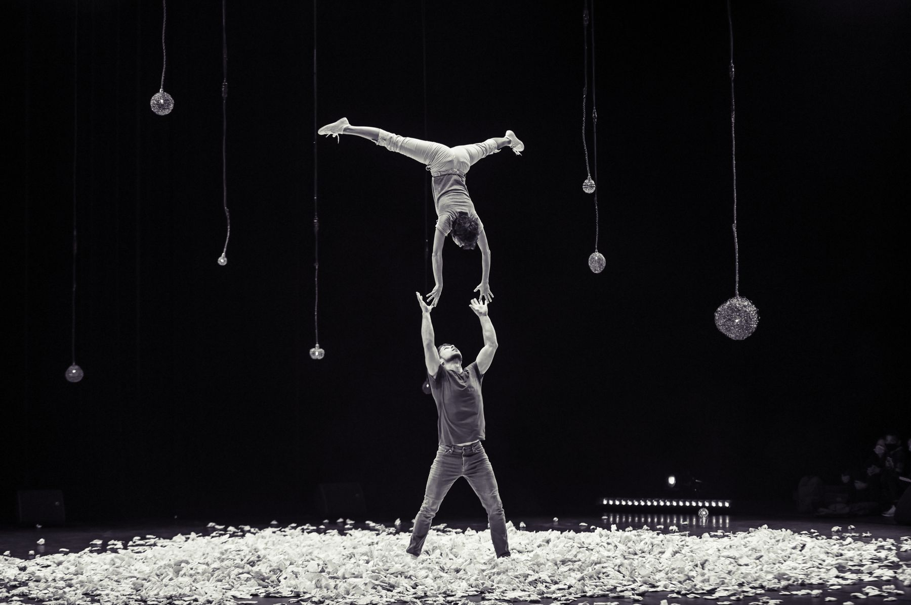

Création 2019
Création 2019Ziguilé
Un ring de boulettes de papier.
Le premier spectacle de la compagnie, créé en décembre 2019 : cirque contemporain et portés acrobatiques.

Un retour vers les sources créatrices de l'enfance.
Portés acrobatiques, danse et parkour, du cœur de Saint-Paul.
Créée en 2017, la compagnie Ziguilé est née de la rencontre d'Émilie Smith, danseuse, et d'Éric Maufrois, acrobate de rue. Ils se forment au main à main et aux équilibres auprès des artistes de l'île et de passage. En créole, « ziguilé » évoque l'univers de l'enfance : le jeu, l'adresse, le partage et le dialogue entre les générations.

Répertoire
Création 2019Un ring de boulettes de papier.
Le premier spectacle de la compagnie, créé en décembre 2019 : cirque contemporain et portés acrobatiques.
 Création 2025
Création 2025« Éteignez tout ! » en créole réunionnais.
Un duo pour le jeune public, dès 4 ans.
 En création
En créationLe nouveau projet de la compagnie.
Le nouveau projet de la compagnie, entre acrobaties, danse et cirque.
Agenda
Le Plongeoir, Pôle national Cirque · Le Mans

Photos, vidéos et nouvelles de la compagnie, au fil des tournées.
Ziguilé, cirque à Saint-Paul
Émilie Smith et Éric Maufrois, directeurs artistiques de la compagnie Ziguilé (anciennement Très d'Union), basée à Saint-Paul, répondent à quelques questions pour l'interview cirque de l'ARAC.
C'est en mars 2016 qu'Émilie Smith et Éric Maufrois, tous deux réunionnais, travaillent pour la première fois en duo. Elle danseuse, lui acrobate de rue, c'est naturellement qu'ils se tournent vers le porté acrobatique, discipline circassienne dans laquelle ils ont su mêler leurs deux univers.
C'est grâce à leur rencontre avec la compagnie Cirquons Flex qu'ils découvrent le cirque contemporain, et c'est avec eux qu'ils acquerront leur base en main à main.
La particularité de la compagnie réside dans le fait que ses artistes soient autodidactes : ils se forment auprès des circassiens réunionnais, des artistes de passage sur l'île ou lors de déplacements dans l'Hexagone. Cette manière de se former deviendra leur force, leur permettant de conserver un regard différent et propre sur leur discipline.
Il leur tient aussi à cœur d'aller à la rencontre des publics éloignés de l'art et de la culture sous toutes ses formes. Il est important pour eux de faire découvrir le cirque contemporain aux Réunionnais, ainsi que leur démarche artistique aux publics éloignés de la culture.
Le travail de résidence de territoire, surtout auprès des jeunes de quartiers sensibles ou des hauts de l'île, fait donc partie de leurs envies et priorités.
Le premier projet de création de la compagnie a vu le jour en décembre 2019. Pour ce premier spectacle, « Ziguilé », ils ont fait appel à Vincent Maillot de Cirquons Flex pour la mise en scène.
Depuis, la compagnie a aussi créé « Tinn tout' ! », un duo pour le jeune public dès 4 ans, et prépare « Vavang' », son nouveau projet, entre acrobaties, danse et cirque.
Créer un spectacle pour la première fois, c'est aussi se créer en tant qu'artiste, se définir, assumer ses choix. Et le choix du cirque contemporain s'est imposé naturellement à eux. Il leur permet en effet d'allier prouesses techniques et propos artistiques, le but étant d'utiliser les arts du cirque pour produire du sens, avec leur vision propre d'artistes.
« Novices dans le monde du cirque, l'ARAC a été pour nous d'un grand soutien. Source d'informations et de rencontres, nous avons toujours eu l'aide dont nous avions besoin grâce à ses membres. Nous avons eu la chance d'être accompagnés par ces personnes d'horizons différents, de découvrir le cirque et le monde du spectacle vivant sous une facette conviviale et pleine de bienveillance. »